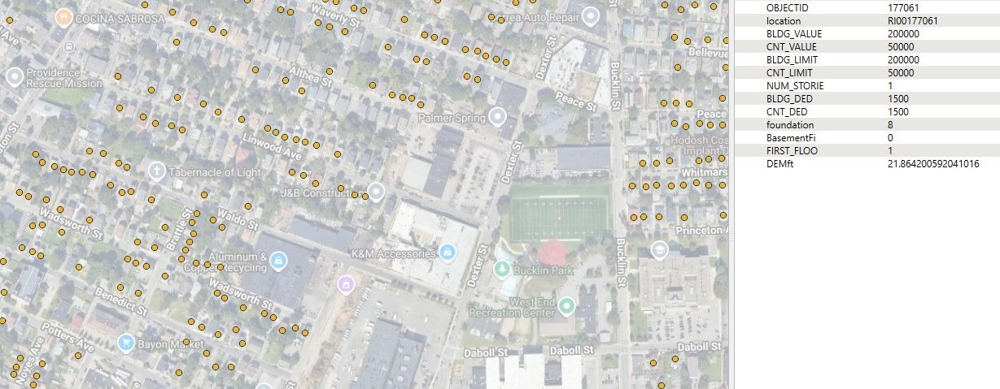

Building Inventories Technical Implementation¶
The Consequence Modeling Solution is designed to natively ingest the National Structures Inventory (NSI) and the Milliman Market Basket datasets out of the box, while also providing a pathway for users to integrate their own custom inventory data. Table 1 identifies the supported data sources, versions, expected input formats, and applicable consequence-modeling pathways.
Table 1. Supported Inventory Data Sources
| Data Source | Version | Input File Type | Consequence Modeling |
|---|---|---|---|
| NSI | 2022 Public Version | GeoPackage | Inland, Coastal |
| NSI | 2022 FEMA-Enhanced Version | File Geodatabase | Inland only |
| Milliman Market Baskets | 2021 Uniform, Uncorrelated | Comma-Separated Values (CSV) | Inland, Coastal |
| User-defined Inventories | User-defined | User-defined | Inland, Coastal |
For additional details on inventory requirements and methodology, refer to the Inventory Methodology Documentation.
Inventory Ingestion and Processing Approach¶
Regardless of which inventory type is provided, several required fields must be present to support loss calculations. However, the Consequence Solution is designed to minimize the amount of data preprocessing required from the user by implementing the following strategies:
- Auto-detection of required fields based on common naming conventions
- Auto-population of missing fields using documented default values
- User-provided overrides for NSI and Milliman field names
- Comprehensive documentation for each inventory source, including requirements for user-defined datasets
- Schema validation to ensure completeness and correctness prior to modeling
Base Buildings Class¶
The Base Buildings Class provides standardized field mapping for building inventories. It defines target fields that all consequence analysis operations use, but does not validate or impute missing fields. The base class simply maps source field names (via auto-detection or explicit overrides) to standardized target field names.
Subclasses extend the base class with schema validation and field imputation:
- NsiBuildings: Validates NSI required fields and imputes optional fields using NSI-specific defaults
- MillimanBuildings: Validates Milliman required fields and imputes optional fields (including creating fields not present in source data like
occupancy_typeandarea) - User-defined: Can use base Buildings class directly (requires all fields present) or create a custom subclass with validation/imputation
The Buildings class provides flexible field mapping through:
- Automatic field detection using case-insensitive matching against common aliases
- Explicit field overrides for non-standard field names
- Property-based access to all target fields regardless of source naming
Base Buildings Schema¶
The following schema defines all target fields used by the Consequence Modeling Solution. Table 1 provides a summary of the target fields, their data types, and usage context.
Table 1. Base Buildings Target Fields
| Target Field | Data Type | Description | Used In | Common Aliases |
|---|---|---|---|---|
| id | String | Unique identifier for the building | Inland, Coastal | id, building_id, bldg_id, fd_id |
| occupancy_type | String | HAZUS occupancy classification (e.g., RES1, COM1, IND2) | Inland, Coastal | occupancy_type, occtype, occupancy, occ_type, building_type |
| first_floor_height | Numeric | First floor height above ground elevation (feet) | Inland, Coastal | first_floor_height, found_ht, first_floor_ht, ffh, floor_height |
| foundation_type | String | Foundation type code (BASE, PILE, SHAL, SLAB) | Inland, Coastal | foundation_type, fndtype, found_type, fnd_type |
| number_stories | Numeric | Number of stories (floors) in the building | Inland, Coastal | number_stories, num_story, numstories, stories, num_floors |
| area | Numeric | Building floor area (square feet) | Inland, Coastal | area, sqft, building_area, floor_area |
| building_cost | Numeric | Building structural replacement cost (USD) | Inland, Coastal | buildingcostusd, building_cost, val_struct, cost, building_value |
| content_cost | Numeric | Contents replacement cost (USD) | Inland, Coastal | contentcostusd, content_cost, val_cont, contents_cost |
| inventory_cost | Numeric | Business inventory replacement cost (USD) | Inland, Coastal | inventorycostusd, inventory_cost, val_inv, inv_cost |
| general_building_type | String | Construction material code (W, M, C, S, MH) | Inland | general_building_type, bldgtype, generalbuildingtype |
| eq_building_type | String | Earthquake-specific building type classification | Earthquake | eqbldgtypeid, eq_building_type, earthquake_building_type |
| eq_design_level | String | Earthquake design level classification | Earthquake | eqdesignlevelid, eq_design_level, design_level |
Base Buildings Data Schema:¶
{
"$schema": "http://json-schema.org/draft-07/schema#",
"$id": "https://example.com/schemas/buildings_schema.json",
"title": "Base Buildings Schema",
"version": "0.1.0",
"description": "Base schema defining standardized target fields for building inventories. The base Buildings class performs field mapping only. Specific implementations (NsiBuildings, MillimanBuildings) extend the base class with schema validation and field imputation. The 'required' attribute indicates whether a field must be present for consequence analysis, not whether the base class validates it.",
"target fields": {
"id": {
"type": "string",
"description": "Unique identifier for the building",
"required": true,
"nullable": false,
"used_in": ["inland", "coastal"],
"aliases": ["id", "building_id", "bldg_id", "fd_id"]
},
"occupancy_type": {
"type": "string",
"description": "Occupancy type code following HAZUS classification (e.g., RES1, COM1, IND2)",
"required": true,
"nullable": false,
"used_in": ["inland", "coastal"],
"aliases": ["occupancy_type", "occtype", "occupancy", "occ_type", "building_type"]
},
"first_floor_height": {
"type": "number",
"description": "First floor height above ground elevation (feet)",
"required": true,
"nullable": false,
"used_in": ["inland", "coastal"],
"aliases": ["first_floor_height", "found_ht", "first_floor_ht", "ffh", "floor_height"]
},
"foundation_type": {
"type": "string",
"description": "Foundation type code for inland flood modeling (I=Pile, P=Pier, W=Solid Wall, B=Basement, C=Crawl, F=Fill, S=Slab)",
"required": true,
"nullable": false,
"used_in": ["inland", "coastal"],
"enum": ["I", "P", "W", "B", "C", "F", "S"],
"aliases": ["foundation_type", "fndtype", "found_type", "fnd_type"]
},
"number_stories": {
"type": "number",
"description": "Number of stories (floors) in the building",
"required": true,
"nullable": false,
"used_in": ["inland", "coastal"],
"aliases": ["number_stories", "num_story", "numstories", "stories", "num_floors", "floors"]
},
"area": {
"type": "number",
"description": "Building floor area in square feet",
"required": true,
"nullable": false,
"used_in": ["inland", "coastal"],
"aliases": ["area", "sqft", "building_area", "floor_area"]
},
"building_cost": {
"type": "number",
"description": "Building structural replacement cost in US dollars",
"required": true,
"nullable": false,
"used_in": ["inland", "coastal"],
"aliases": ["buildingcostusd", "building_cost", "val_struct", "cost", "replacement_cost", "building_value"]
},
"content_cost": {
"type": "number",
"description": "Contents replacement cost in US dollars",
"required": true,
"nullable": false,
"used_in": ["inland", "coastal"],
"aliases": ["contentcostusd", "content_cost", "val_cont", "contents_cost"]
},
"inventory_cost": {
"type": "number",
"description": "Business inventory replacement cost in US dollars",
"required": true,
"nullable": false,
"used_in": ["inland", "coastal"],
"aliases": ["inventorycostusd", "inventory_cost", "val_inv", "inv_cost"]
},
"general_building_type": {
"type": "string",
"description": "General construction type code (W=Wood, M=Masonry, C=Concrete, S=Steel, MH=Manufactured Housing)",
"required": true,
"nullable": false,
"used_in": ["inland"],
"enum": ["W", "M", "C", "S", "MH"],
"aliases": ["general_building_type", "bldgtype", "generalbuildingtype"]
},
"eq_building_type": {
"type": "string",
"description": "Earthquake-specific building type classification",
"required": true,
"nullable": false,
"used_in": ["earthquake"],
"aliases": ["eqbldgtypeid", "eq_building_type", "earthquake_building_type"]
},
"eq_design_level": {
"type": "string",
"description": "Earthquake design level classification",
"required": true,
"nullable": false,
"used_in": ["earthquake"],
"aliases": ["eqdesignlevelid", "eq_design_level", "design_level"]
}
}
}
National Structures Inventory (NSI)¶

The National Structures Inventory (NSI), developed by the U.S. Army Corps of Engineers (USACE), is a nationwide database of structures across the 50 U.S. states. At present, the NSI does not include coverage for U.S. territories. The publicly available NSI dataset provided many of the key fields used for consequence analysis; however, it is important to note that building and contents values are reported as depreciated values rather than full replacement costs. Full technical documentation for the NSI is available on the USACE NSI Technical Documentation page.
USACE also maintains a restricted version of the NSI accessible to federal users, which contains additional attributes derived from parcel data and other proprietary sources.
To support national hazard risk assessments, FEMA has developed an enhanced internal version of the NSI that extends coverage to the District of Columbia, Puerto Rico, the U.S. Virgin Islands, and Pacific Territories. This FEMA-enhanced dataset applies full replacement values consistent with the Hazus 7.0 Inventory Technical Manual and resolves several known data quality issues identified in the public NSI.
NSI 2022 Public Version¶
The 2022 Public NSI contains all attributes required to support both inland and coastal consequence modeling. Table 2 lists the key fields used in the Consequence Modeling Solution, including data types, assumptions, rules, and default values assigned when data is missing.
Table 2. NSI 2022 Public Data Attributes for Analysis
| Analysis Attribute | Data Type | NSI Field Name | Consequence Modeling | Assumption | Rule | Default if Missing |
|---|---|---|---|---|---|---|
| Geometry | Point | Shape | Inland, Coastal | Point geometry | Must be valid point geometry | Error (required) |
| Unique ID | Object ID | fid | Inland, Coastal | Provided | Must be present and unique | Error (required) |
| Occupancy Type | String | occtype | Inland, Coastal | Provided; must map to Hazus types | Must map to Hazus types | RES1 |
| Building Value | Numeric | val_struct | Inland, Coastal | Depreciated USD value | Must be present | Error (required) |
| Content Value | Numeric | val_cont | Inland, Coastal | Depreciated USD value | Validate > 0; assign default if missing | Default % by occupancy (see Inventory Methodology Table 3) |
| Number of Stories | Numeric | num_story | Inland, Coastal | Provided | Validate > 0; assign default | 1 |
| Area / Square Footage | Numeric | sqft | Inland | Square footage | Validate > 0; assign default | Hazus defaults (Inventory Methodology Table 2) |
| General Building Type | String | bldgtype | Inland | Provided (M, W, H, S) | Assign default if missing | W (Wood) |
| Foundation Type | String | found_type | Inland, Coastal | Provided (C, B, S, P, I, F, W) | Assign default if missing | Slab |
| Foundation Height | Numeric | found_ht | Inland, Coastal | Feet above ground | Assign default | Slab = 1 ft; Shallow = 3 ft; Pile = 8 ft; Basement = 2 ft |
| Ground Elevation | Numeric | Ground_elv | Coastal | Feet (NAVD88) | Required for coastal modeling | Error (required) |
NSI 2022 Public – Inland Foundation Type Mapping¶
For the NSI Public dataset, the found_type field must be mapped to the standardized inland foundation types used by the Consequence Modeling engine.
Implementation Rules:
- The NSI
found_typefield is always used as the source field. - Foundation types must be translated using Table 3.
- If a code does not match a supported value:
- Treat the foundation type as uncertain, and
- Assign the default inland foundation type SLAB.
- No parcel-derived refinements are available in the public NSI.
Table 3. Inland Foundation Type Mapping for NSI 2022 Public Version
| found_type | Description | Assigned Inland Foundation Type |
|---|---|---|
| C | Crawl | SHAL |
| B | Basement | BASE |
| S | Slab | SLAB |
| P | Pier | SHAL |
| F | Fill | SLAB |
| W | Solid Wall | SHAL |
| I | Pile | PILE |
NSI 2022 Public – Coastal Foundation Type Mapping¶
TODO: Define coastal foundation type mapping rules for the NSI Public dataset.
NSI 2022 FEMA-Enhanced Version¶
The NSI 2022 FEMA-Enhanced Version allows users to calculate losses using full replacement costs and expands structure coverage to include Washington, D.C., Puerto Rico, U.S. Virgin Islands. This enhanced version also includes parcel-derived fields that support refinement of the inland foundation type assignment.
However, the FEMA-enhanced dataset does not include ground-elevation information. As a result, only inland consequence modeling is supported out of the box. Users may preprocess the dataset and manually supply ground elevations if they wish to perform coastal modeling using the user-defined inventory ingestion process. Table 4 summarizes the attributes used in the analysis, including data types, assumptions, rules, and defaults applied when values are missing.
Table 4. NSI 2022 FEMA-Enhanced Data Attributes for Analysis
| Analysis Attribute | Data Type | NSI Field Name | Assumption | Rule | Default if Missing |
|---|---|---|---|---|---|
| Geometry | Point | Shape | Point geometry | Must be valid point geometry | Error (required) |
| Unique ID | Object ID | OBJECTID | Provided | Must be present and unique | Error (required) |
| Occupancy Type | String | OCCTYPE | Provided; must map to Hazus occupancy types | Must map to Hazus types | RES1 |
| Building Value | Numeric | Hazus_Building_Values | Full replacement cost (USD) | Must be present | Error (required) |
| Content Value | Numeric | Hazus_Content_Values | Full replacement cost (USD) | Validate > 0; assign default if missing | Default % by occupancy (Inventory Methodology Table 3) |
| Number of Stories | Numeric | NUM_STORY | Provided | Validate > 0; assign default | 1 |
| Area / Square Footage | Numeric | SQFT | Square footage (sq ft) | Validate > 0; assign default | Hazus defaults (Inventory Methodology Table 2) |
| General Building Type | String | GENERALBUILDINGTYPE | Provided (M, W, H, S) | Assign default if missing | W (Wood) |
| Foundation Type | String | FNDTYPE | Provided (C, B, S, P, I, F, W) | Assign default if missing | Slab |
| Foundation Height | Numeric | FOUND_HT | Feet above ground elevation | Assign default if missing | Slab = 1 ft; Shallow = 3 ft; Pile = 8 ft; Basement = 2 ft |
| Foundation Type (Parcel) | String | P_FNDTYPE | Provided | Used only for parcel-based refinement logic | None |
| Basement Type (Parcel) | String | P_BSMNT | Provided | Used only for parcel-based refinement logic | None |
NSI 2022 FEMA-Enhanced — Inland Foundation Type Mapping¶
For the FEMA-Enhanced NSI, parcel-derived fields (P_FNDTYPE and P_BSMNT) are used to refine the inland foundation type. The following rules determine the assigned inland foundation type:
Refinement Rules:
-
If
P_BSMNTcontains any of the following codes —B,U,I,F,P,L,D,Y— set inland foundation type to BASE. -
If
P_FNDTYPEcontains any of the following codes —S,P,L,F,E,T,W,A— inland foundation type must stay blank/null, even whenP_BSMNTindicates a basement. -
If
P_BSMNTdoes not indicate a basement, inland foundation type comes directly fromP_FNDTYPEusing the mapping in Table 5. -
If
P_FNDTYPEis null, use the NSI-providedFNDTYPEfield and map it using the same rules as the NSI 2022 Public Version (found_type).FNDTYPEin FEMA-Enhanced is equivalent tofound_typein the Public NSI.
Table 5. NSI 2022 FEMA-Enhanced Parcel Foundation Type Mapping
| P_FNDTYPE | Description | Assigned Inland Foundation Type |
|---|---|---|
| P | Piers | SHAL |
| A | Concrete | SLAB |
| W | Wood | SHAL |
| C | Crossed Walls | SLAB |
| S | Slab | SLAB |
| K | Concrete Block | SHAL |
| O | Other | NULL |
| G | Stone | SHAL |
| D | Masonry | SHAL |
| L | Piling | PILE |
| R | Retaining Wall | SHAL |
| T | Footing | SLAB |
| B | Crawl / Raised | SHAL |
| F | Mud Sill | SLAB |
| E | Earth | SLAB |
| Z | Placeholder | If P_BSMNT indicates basement → BASE, otherwise Slab |
NSI Data Schema:¶
{
"$schema": "http://json-schema.org/draft-07/schema#",
"$id": "https://example.com/schemas/nsi_schema.json",
"title": "NSI Buildings Schema",
"version": "0.1.0",
"description": "Schema for NSI (National Structure Inventory) building data",
"default fields": {
"target_fid": {
"type": "string",
"description": "Unique identifier for the building",
"default target field": "id",
"required": true,
"nullable": false
},
"occtype": {
"type": "string",
"description": "Occupancy type code (e.g., RES1, COM1)",
"default target field": "occupancy_type",
"required": false,
"nullable": true
},
"found_ht": {
"type": "number",
"description": "First floor height (feet above ground)",
"default target field": "first_floor_height",
"required": false,
"nullable": true
},
"found_type": {
"type": "string",
"description": "Foundation type code (I=Pile, P=Pier, W=Solid Wall, B=Basement, C=Crawl, F=Fill, S=Slab)",
"default target field": "foundation_type",
"enum": ["I", "P", "W", "B", "C", "F", "S"],
"required": false,
"nullable": true
},
"num_story": {
"type": "number",
"description": "Number of stories in the building",
"default target field": "number_stories",
"required": true,
"nullable": false
},
"sqft": {
"type": "number",
"description": "Building area in square feet",
"default target field": "area",
"required": true,
"nullable": false
},
"val_struct": {
"type": "number",
"description": "Building replacement cost ($USD)",
"default target field": "building_cost",
"required": true,
"nullable": false
},
"val_cont": {
"type": "number",
"description": "Contents replacement cost ($USD)",
"default target field": "content_cost",
"required": false,
"nullable": true
},
"bldgtype": {
"type": "string",
"description": "General building type code (e.g., W=Wood, M=Masonry, C=Concrete, S=Steel)",
"default target field": "general_building_type",
"required": false,
"nullable": true
}
}
}
However, users may provide a crosswalk (a.k.a. override) from the target fields to the user's non-standard fields.
Example of User-Provided Override for NSI Field Names: (keys=target_field, values=user's field)
{
"building_cost": "my_custom_building_cost_field"
}
Milliman Market Baskets Data¶
 The Milliman Market Baskets were developed by Milliman, Inc. to support FEMA’s Risk Rating 2.0 initiative. Milliman created Market Baskets for all U.S. states and territories to provide a representative sample of single-family homes (RES1) used in the development of rating factors. Market Basket locations were derived primarily from CoreLogic ParcelPoint data, supplemented with U.S. Census and National Hydrography Dataset (NHD) information, and refined through extensive quality control to ensure accuracy and realistic spatial distribution.
Three categories of data, referred to as “books”, were created from the Market Baskets:
- Uniform Book – Each property assigned identical structural and coverage characteristics, allowing geographic variability to be analyzed independently.
- Uncorrelated Market Basket – Contains randomized property and policy characteristics not correlated with geography; foundation type and first-floor height remain linked to prevent implausible combinations.
- Correlated Market Basket (Inforce Dataset) – Joined with FEMA policy data (GFE access required); attributes are correlated to reflect realistic joint distributions and align with observed parcel and NFIP exposure data.
The Consequences Solution is designed and tested using the Uniform and Uncorrelated Market Basket datasets. Table 6 describes the analysis attributes used across these books. Although the schema is consistent, the method of attribute imputation varies by dataset. For example, the Uncorrelated Market Basket randomizes property and coverage characteristics, while the Correlated Market Basket applies state-specific distributions to more closely represent actual conditions.
The Milliman Market Basket datasets support both coastal and inland loss calculations, as they include the necessary structural, coverage, and geographic attributes for each modeling environment. Their use, however, is limited to single-family residential (RES1) structures, as the datasets were specifically developed for rating factor development under FEMA’s NFIP framework. For more details, refer to the FEMA (2022).
Table 6. Milliman Data Attributes for Analysis
| Analysis Attribute | NSI Field Name | Data Type | Notes |
|---|---|---|---|
| X Location | LON | Double | |
| Y Location | LAT | Double | |
| Unique ID | Location | String | |
| Occupancy Type | -- | -- | All points are RES1 |
| Building Value | BLDG_VALUE | Long | Full replacement value |
| Building Insurance Deductible | BLDG_DED | Long | |
| Building Insurance Limit | BLDG_LIMIT | Long | |
| Content Value | CNT_VALUE | Long | Full replacement value |
| Content Insurance Deductible | CNT_DED | Long | |
| Content Insurance Limit | CNT_LIMIT | Long | |
| Number of Stories | NUM_STORIES | Long | |
| Area/Square Footage | -- | -- | Use default area for RES1 based on Hazus Methodolgy, i.e. sqft=1800 |
| General Building Type | CONSTR_CODE | Long | Construction type, ( 1 = W, 2 = M), Use default value W if not provided. |
| Foundation Type | foundationtype | Long | Foundation type, (2 = basement; 4 = crawlspace; 6 = pier; 7 = fill or wall; 8 = slab; 9 = pile) |
| Foundation Height | FIRST_FLOOR_ELEV | Long | First floor height (feet above ground) |
| Basement Type | BasementFinishType | Long | Basement Finish type, (0 = no basement; 1 = unfinished basement; 2 = finished basement) |
| Ground Elevation | elev_ft | Float | Digital Elevation Model (DEM) (ground) elevation (feet NAVD88) |
Milliman — Inland Foundation Type Mapping¶
For both the Uniform Book and Uncorrelated Market Basket datasets, the foundation field contains numeric codes that must be mapped to inland foundation types used by the Consequences Solution. These mappings support correct depth–damage function assignment.
Table 7. Milliman Inland Foundation Type Mapping
| foundation | Description | Assigned Inland Foundation Type |
|---|---|---|
| 2 | Basement | BASE |
| 4 | Crawlspace | SHAL |
| 6 | Pier | SHAL |
| 7 | Fill / Wall | SLAB |
| 8 | Slab | SLAB |
| 9 | Pile | PILE |
Milliman — Coastal Foundation Type Mapping¶
To be developed.
Milliman Data Schema:¶
{
"$schema": "http://json-schema.org/draft-07/schema#",
"$id": "https://example.com/schemas/milliman_schema.json",
"title": "Milliman Buildings Schema",
"version": "0.2.0",
"description": "Typical schema for Milliman building data (Uniform, Uncorrelated Market Basket)",
"default fields": {
"accntnum": {
"type": "number",
"description": "unique policy id (0 prefix=market basket, 1 prefix=uncorrelated book, no prefix=uniform book)",
"default target field": null,
"required": false,
"nullable": true
},
"location": {
"type": "string",
"description": "Location ID of building which serves as the unique identifier",
"default target field": "id",
"required": true,
"nullable": false
},
"BLDG_DED": {
"type": "number",
"description": "Building insurance deductible ($USD)",
"default target field": null,
"required": false,
"nullable": true
},
"BLDG_LIMIT": {
"type": "number",
"description": "Building insurance limit ($USD)",
"default target field": null,
"required": false,
"nullable": true
},
"CNT_DED": {
"type": "number",
"description": "Contents insurance deductible ($USD)",
"default target field": null,
"required": false,
"nullable": true
},
"CNT_LIMIT": {
"type": "number",
"description": "Contents insurance limit ($USD)",
"default target field": null,
"required": false,
"nullable": true
},
"STATE": {
"type": "string",
"description": "Two-letter state abbreviation",
"default target field": null,
"required": false,
"nullable": true
},
"POSTCODE": {
"type": "string",
"description": "5-digit ZIP code",
"default target field": null,
"required": false,
"nullable": true
},
"COUNTRY": {
"type": "string",
"description": "Country code (e.g., US)",
"default target field": null,
"required": false,
"nullable": true
},
"LON": {
"type": "number",
"description": "Longitude in decimal degrees",
"default target field": null,
"required": true,
"nullable": false
},
"LAT": {
"type": "number",
"description": "Latitude in decimal degrees",
"default target field": null,
"required": true,
"nullable": false
},
"BLDG_VALUE": {
"type": "number",
"description": "Building replacement cost ($USD)",
"default target field": "building_cost",
"required": true,
"nullable": false
},
"CNT_VALUE": {
"type": "number",
"description": "Contents replacement cost ($USD)",
"default target field": "content_cost",
"required": true,
"nullable": false
},
"CONSTR_CODE": {
"type": "number",
"description": "Construction type code (1=wood; 2=masonry)",
"default target field": "general_building_type",
"enum": [1, 2],
"required": false,
"nullable": true
},
"NUM_STORIES": {
"type": "number",
"description": "Number of stories in the building",
"default target field": "number_stories",
"required": true,
"nullable": false
},
"YEAR_BUILT": {
"type": "number",
"description": "Year the building was constructed",
"default target field": null,
"required": false,
"nullable": true
},
"FoundationType": {
"type": "number",
"description": "Foundation type code (2=basement; 4=crawlspace; 6=pier; 7=fill or wall; 8=slab; 9=pile)",
"default target field": "foundation_type",
"enum": [2, 4, 6, 7, 8, 9],
"required": false,
"nullable": true
},
"BasementFinishType": {
"type": "number",
"description": "Basement finish type code (0=no basement; 1=unfinished basement; 2=finished basement)",
"default target field": null,
"enum": [0, 1, 2],
"required": false,
"nullable": true
},
"FIRST_FLOOR_ELEV": {
"type": "number",
"description": "First floor elevation above ground in",
"default target field": "first_floor_height",
"required": true,
"nullable": false
},
"BASE_FLOOD_ELEV": {
"type": "number",
"description": "Base flood elevation (BFE) in feet",
"default target field": null,
"required": false,
"nullable": true
}
}
}
However, users may provide a crosswalk (a.k.a. override) from the target fields to the user's non-standard fields.
Example of User-Provided Override for Milliman Field Names: (keys=target_field, values=user's field)
{
"building_cost": "my_custom_building_cost_field"
}
User Defined Data¶
Users can provide custom building inventories for consequence analysis by ensuring their data conforms to the Base Buildings Schema defined above. The Buildings class provides flexible ingestion pathways that support various data formats and field naming conventions.
Requirements for User-Defined Inventories¶
-
Geometry: Must include valid point geometry (latitude/longitude coordinates)
-
Required Fields: Must contain or allow imputation of:
-
Unique building identifier (
id) - Number of stories (
number_stories) - Building floor area (
area) -
Building replacement cost (
building_cost) -
Optional Fields: May include (or rely on defaults):
-
Occupancy type, foundation type, first floor height
- Content cost, inventory cost, construction type
- Any output fields from previous analyses
Field Mapping Approaches¶
Approach 1: Use Standard Field Names
Create a GeoDataFrame with columns matching target field names or their aliases:
import geopandas as gpd
import pandas as pd
from inland_consequences.buildings import Buildings
# Create DataFrame with standard field names
data = {
'id': ['B001', 'B002', 'B003'],
'occupancy_type': ['RES1', 'COM1', 'IND2'],
'building_cost': [250000, 500000, 1000000],
'content_cost': [125000, 500000, 1500000],
'number_stories': [2, 1, 3],
'area': [2000, 5000, 10000],
'first_floor_height': [1.0, 2.0, 3.0],
'foundation_type': ['S', 'S', 'B'],
'general_building_type': ['W', 'M', 'C'],
'latitude': [40.7, 40.8, 40.9],
'longitude': [-74.0, -74.1, -74.2]
}
# Create GeoDataFrame with point geometry
gdf = gpd.GeoDataFrame(
data,
geometry=gpd.points_from_xy(data['longitude'], data['latitude']),
crs='EPSG:4326'
)
# No overrides needed - fields auto-detected
buildings = Buildings(gdf)
Approach 2: Provide Field Overrides
Map your custom field names to target fields using the overrides parameter:
# User has non-standard field names
data = {
'building_id': ['B001', 'B002', 'B003'],
'use_code': ['RES1', 'COM1', 'IND2'],
'struct_value': [250000, 500000, 1000000],
'contents_value': [125000, 500000, 1500000],
'floors': [2, 1, 3],
'sqft': [2000, 5000, 10000],
'ffh_ft': [1.0, 2.0, 3.0],
'foundation': ['SLAB', 'SLAB', 'BASEMENT'],
'construction': ['WOOD', 'MASONRY', 'CONCRETE'],
'lat': [40.7, 40.8, 40.9],
'lon': [-74.0, -74.1, -74.2]
}
gdf = gpd.GeoDataFrame(
data,
geometry=gpd.points_from_xy(data['lon'], data['lat']),
crs='EPSG:4326'
)
# Provide explicit mapping from target fields to user's fields
overrides = {
'id': 'building_id',
'occupancy_type': 'use_code',
'building_cost': 'struct_value',
'content_cost': 'contents_value',
'number_stories': 'floors',
'area': 'sqft',
'first_floor_height': 'ffh_ft',
'foundation_type': 'foundation',
'general_building_type': 'construction'
}
buildings = Buildings(gdf, overrides=overrides)
Approach 3: Rely on Default Imputation
Provide only required fields; optional fields will be imputed using documented defaults:
# Minimal dataset - only required fields
data = {
'building_id': ['B001', 'B002', 'B003'],
'building_cost': [250000, 500000, 1000000],
'number_stories': [2, 1, 3],
'area': [2000, 5000, 10000],
'latitude': [40.7, 40.8, 40.9],
'longitude': [-74.0, -74.1, -74.2]
}
gdf = gpd.GeoDataFrame(
data,
geometry=gpd.points_from_xy(data['longitude'], data['latitude']),
crs='EPSG:4326'
)
overrides = {'id': 'building_id'}
# Optional fields will be imputed:
# - occupancy_type: RES1
# - foundation_type: S (Slab)
# - first_floor_height: 1.0 ft (slab default)
# - general_building_type: W (Wood)
# - content_cost: 50% of building_cost (RES1 default)
buildings = Buildings(gdf, overrides=overrides)
Foundation Type Coding¶
If your data uses different foundation type codes than the standardized codes (I, P, W, B, C, F, S), you must preprocess your data to translate to the standard codes:
| Standard Code | Description | Inland Foundation Type |
|---|---|---|
| I | Pile (Infilled) | PILE |
| P | Pier/Post | SHAL (Shallow) |
| W | Solid Wall | SHAL (Shallow) |
| B | Basement | BASE (Basement) |
| C | Crawlspace | SHAL (Shallow) |
| F | Fill | SLAB |
| S | Slab on Grade | SLAB |
Data Validation¶
The Buildings class performs automatic validation:
- Required fields present: Verifies all required fields exist (either directly or through aliases)
- No missing required values: Ensures required fields have no NULL/NaN values
- Valid geometry: Confirms point geometry is valid and has a coordinate reference system
If validation fails, the class raises descriptive errors indicating which fields are missing or invalid.
Example: Complete User-Defined Workflow¶
from inland_consequences.buildings import Buildings
from inland_consequences.inland_flood_analysis import InlandFloodAnalysis
from inland_consequences.raster_collection import RasterCollection
from inland_consequences.default_vulnerability import DefaultVulnerability
# 1. Load user's building data
user_buildings_gdf = gpd.read_file('my_buildings.gpkg')
# 2. Define field mappings
field_overrides = {
'id': 'UNIQUE_ID',
'occupancy_type': 'OCCUPANCY',
'building_cost': 'REPLACEMENT_VALUE',
'number_stories': 'NUM_FLOORS',
'area': 'FLOOR_AREA_SQFT'
}
# 3. Create Buildings object (auto-validates and imputes defaults)
buildings = Buildings(user_buildings_gdf, overrides=field_overrides)
# 4. Use in analysis
hazard_rasters = RasterCollection('flood_depth_*.tif')
vulnerability = DefaultVulnerability()
with InlandFloodAnalysis(hazard_rasters, buildings, vulnerability) as analysis:
analysis.calculate_losses()
results_gdf = analysis.buildings.gdf # GeoDataFrame with loss results
For additional guidance on default values and imputation strategies, see the Inventory Methodology Documentation.